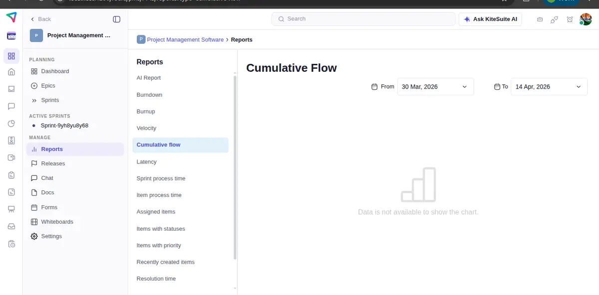

FULL-STACK + AI BUILD. CONNECT. INTELLIGENTLY.
Full-Stack Developer with 2+ years of experience shipping production SaaS applications end to end (Angular 17+, React, TypeScript, Node.js, Express.js, NestJS, MongoDB, and Groq/Llama GenAI). Led technical execution on KiteSuite and solo-engineered & launched AutoApply AI.

World-Scale Telemetry.
Low-latency multi-region architecture.
Production SaaS platforms demand distributed thinking: multi-region endpoints, edge caching, timezone synchronization, and native internationalization across global workspaces.
Synchronized UTC & Local Timezones
Handling cross-timezone calendar scheduling, meeting booking, and async workflows across team continents.
Native Internationalization (i18n)
Native 6-language instant localization without page refresh. Formatted numbers, dates, and localized telemetry.
Production SaaS.
Engineered end-to-end.
Proven production execution across two flagship systems: a solo-engineered AI automation SaaS serving candidates across India & Europe, and a multi-module enterprise SaaS workspace.

AutoApply AI — AI-Powered Job Application Automation SaaS
Designed and built an AI-powered job-search SaaS platform solo, end to end, for job seekers in India and Europe — including resume parsing, job discovery across multiple platforms, AI-explained match scoring, ghost-job detection, AI resume tailoring, auto-apply and instant job alerts.
KiteSuite.
One platform, many connected systems.
Owned ongoing development and production delivery for KiteSuite at Rudra Innovative Software: a multi-module SaaS platform covering project management, documentation, forms, ATS, scheduling, CRM workflows, and no-code Natural Language Automation Builder.
KiteSuite is a connected SaaS workspace platform spanning projects, recruiting, documents, meetings, forms, time tracking and integrations. It is a live production system used across multiple interconnected modules, not a single-page demo.
Led day-to-day technical execution: assigning tasks, reviewing pull requests, mentoring junior developers and coordinating delivery; took part in architecture and technical design discussions and managed client communication on feature delivery.
Full-Stack Modules
Built and maintained full-stack features using Angular, React, TypeScript, Node.js, Express.js, NestJS and MongoDB, with NgRx/RxJS state management and WCAG accessibility.
GenAI & Automation
Designed and shipped AI chat assistant, smart document/task search, standup digests, risk detection, AI-estimated timelines, and a no-code Natural Language Automation Builder.
Ecosystem Integrations
Maintained enterprise integrations with ClickUp, Google OAuth 2.0, Auth0, and Stripe; engineered real-time WebSockets, Redis caching, and Swagger/OpenAPI documentation.
Delivery & Mentoring
Handled production deployments, live-issue troubleshooting, unit & integration tests; assigned tasks, reviewed PRs, and mentored junior developers.
Evidence,
not a screenshot wall.
A deliberate sequence through KiteSuite's product surface — each screenshot chosen for what it proves about the engineering behind it. Click any image to expand in high definition.

Shipping is a tracked workflow, not a hope.
Release planning and version tracking across a multi-module product. Proves comfort working inside structured production-delivery workflows, not just writing code in isolation.

Integrations surface
Third-party connectivity configuration — OAuth and webhook-driven integration work.

Recruiting / ATS workflow
A full applicant-tracking module inside a broader SaaS suite, not a bolt-on feature.

Project planning
Calendar-driven project scheduling, tied to the same data model as tasks and releases.

Meetings & collaboration
Scheduling and availability logic that has to stay consistent across time zones and teams.

Turning raw activity into readable signal.
Reporting surfaces built on aggregation across projects, time entries and workflow activity — direct application of the data-engineering skills listed below.

File and document workflows at team scale.
Document listing and organization with permissions tied to workspace roles — the kind of surface that looks simple but breaks first under real usage.
Time tracking
Time-series productivity data tied back into reporting and billing-adjacent workflows.
I think in
whole systems.
A generalized view of how the layers of a production SaaS platform connect — not KiteSuite's actual infrastructure, but the kind of thinking behind contributing to it safely.
- Product SurfaceBeautiful & responsive UIs
- API LayerSecure, scalable services
- Data LayerMongoDB, caching
- IntegrationsAPIs, OAuth, Webhooks
- AI LayerLLMs, embeddings, search
- ProductionCI/CD, monitoring, scale


The full layer list, in detail.
Product surfaces
The modules a user actually touches — projects, ATS, docs, meetings, forms.
Frontend
Component-driven UI, state management and responsive interaction layers.
API layer
REST endpoints that mediate between the interface and the data underneath.
Auth & access
Authentication and role-based access control across workspace boundaries.
Data layer
Document modeling, indexing and query design for cross-module lookups.
Integrations
OAuth and webhook-driven connections to external services and providers.
Events & async work
Background jobs and asynchronous flows that keep the interface responsive.
AI layer
Model/provider integration for AI-assisted product features, kept separate from core logic.
Observability & validation
Input validation, error handling and the checks that catch problems before users do.
Production & deployment
Getting a change from a branch into something real users depend on.
Full range,
not a logo wall.
Grouped by what each skill is actually for — not an unbroken list of names.
Languages & Core
 HTML5
HTML5
 CSS3 / SCSS
CSS3 / SCSS
Frontend Engineering
 NgRx & Redux
RxJS Streams
Component Architecture
WCAG Accessibility
UI Performance Optimization
NgRx & Redux
RxJS Streams
Component Architecture
WCAG Accessibility
UI Performance Optimization
Backend & Distributed APIs
JWT Auth
 OAuth 2.0 & Auth0
Swagger / OpenAPI
OAuth 2.0 & Auth0
Swagger / OpenAPI
Databases & Caching
 Mongoose
Aggregation Pipelines
Schema Design
Compound Indexing
Redis In-Memory Cache
Mongoose
Aggregation Pipelines
Schema Design
Compound Indexing
Redis In-Memory Cache
Generative AI & LLMs
Integrations & Cloud Platforms
Testing & Quality Assurance
Engineering Practices & Leadership
Practical AI.
Not AI theatre.
AI treated as a product/engineering capability with real constraints — not a badge on a résumé.
LLM integration
Wiring model/provider APIs into product workflows — prompt construction, response handling and integrating AI output into existing UI, not just calling an endpoint.
Embeddings & semantic search
Vector-based retrieval concepts for surfacing relevant content instead of relying on exact keyword matches.
Failure-aware AI
Designing for the case where the model is wrong, slow or unavailable — not just the happy path.
Evidence,
not claims.
A consistent framework for evaluating engineering work, applied honestly — including numbers that belong to a previous role, kept in that context.
Where the
work happened.
A verified track record across production SaaS development, technical leadership, and engineering delivery.
Junior MEAN Stack Developer — GenAI & AI Applications · Rudra Innovative Software, Mohali, Punjab
Owned ongoing development and production delivery for KiteSuite (multi-module SaaS: project management, documentation, forms, ATS, scheduling, CRM workflows). Built full-stack features using Angular 17+, React, TypeScript, Node.js, Express.js, NestJS, and MongoDB with NgRx/RxJS state management and WCAG accessibility. Shipped AI chat assistant, smart semantic search, summaries, risk detection, and no-code Natural Language Automation Builder. Led day-to-day execution, PR reviews, mentoring junior developers, and client communication.
Software Developer · Sumedha Softtech Pvt. Ltd., Jaipur, Rajasthan
Developed and maintained full-stack web applications using Angular, React, JavaScript, Node.js, Express.js and MongoDB. Built responsive UI components, REST APIs, authentication flows (JWT/OAuth), and database logic. Contributed to ZenduIt fleet-management and field-services platform. Handled bug fixes, Postman API testing, and production issue resolution with Git.
Web Developer Intern · Sumedha Softtech Pvt. Ltd., Jaipur, Rajasthan
Built responsive web interfaces and backend features using JavaScript, Angular, Node.js, Express.js, MongoDB, HTML and CSS. Supported live feature development, debugging, testing and ongoing maintenance of production web apps.
Bachelor of Technology (B.Tech) in Computer Science & Engineering
Sri Balaji College of Engineering & Technology, Jaipur (Affiliated with Rajasthan Technical University) · GPA: 8.6 / 10.
I engineer systems
that scale and endure.
Full-Stack Developer with 2+ years of experience building and shipping production SaaS applications end to end, using Angular, React, TypeScript, Node.js, Express.js, NestJS and MongoDB. Experienced with state management (NgRx, Redux, RxJS), RESTful API design, authentication (JWT, OAuth 2.0, Auth0), unit and integration testing, and Agile/Scrum delivery. Have led day-to-day technical execution, mentored junior developers, managed client communication, and independently designed, built and deployed a complete AI-powered SaaS product (AutoApply AI) solo, from front end to cloud infrastructure.
B.Tech CSE · Sri Balaji College (RTU)
Sri Balaji College of Engineering & Technology, Jaipur · GPA: 8.6 / 10 · Class of 2024
SaaS Product × Practical GenAI
Transforming complex business logic into high-performing interfaces, resilient microservices, and failure-aware AI pipelines.
Let's build
something exceptional.
Based in Mohali, Punjab, India (with roots in Jaipur). Available for full-time engineering roles, product collaborations, and distributed high-scale SaaS architectures.